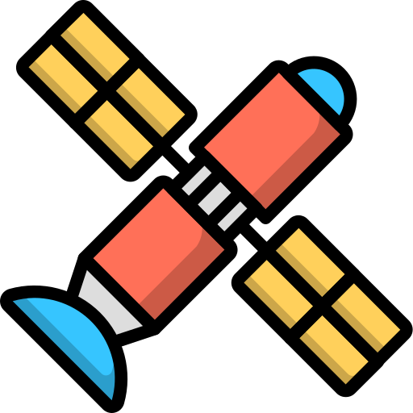
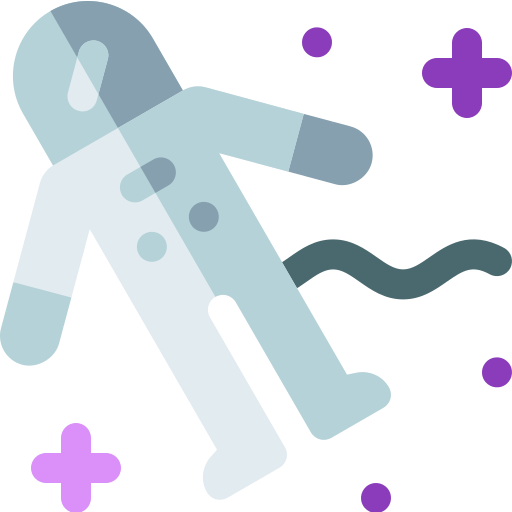
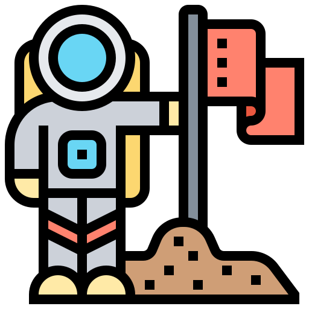

In Progress ... 
 Choose some coins
there is no graph :/ but the table gives you the new value of your favorite crypto every 2 seconds 
Working on the cryptocurrency project for my training was truly exciting! I thoroughly enjoyed the concept and had a wonderful experience applying my development skills. It proved to be a rewarding endeavor that fueled my enthusiasm for future projects. As an enthusiastic Full-Stack Developer in training 🚀, I am a constant learner, currently honing my skills in Full Stack Development with an expected completion in a few months. 💻 I am passionate about self-driven projects alongside my formal studies to expand my knowledge and capabilities.